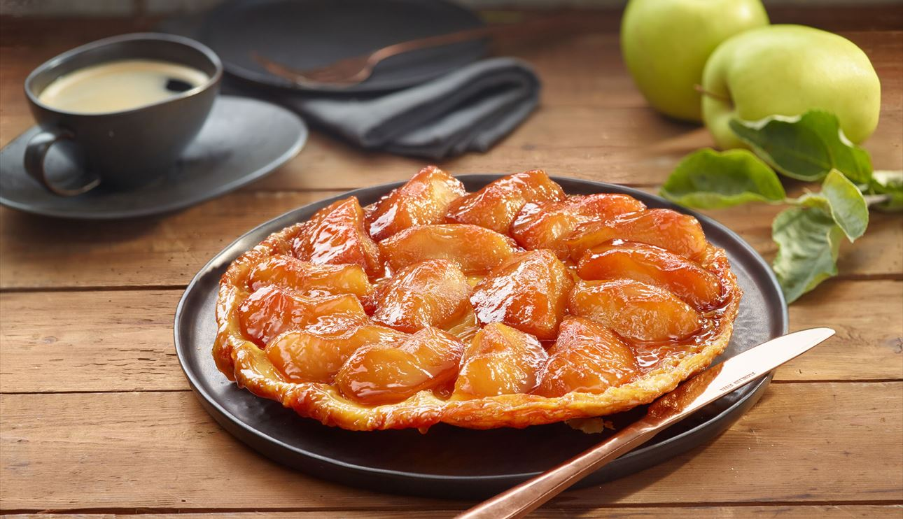

“My policy on cake is pro having it and pro eating it.” — Boris Johnson

Tarte Tatin
Mom's favorite and a French classic. An absolute pain to bake but trust me, it's worth it
Did you know it was invented by accident when the owners of the Tatin hotel realized they were baking a pie without the crust and added it on top?
They then flipped it and the result is gorgeous.
INGRIDIENTS:
- Three Apples
- Sugar and butter
- Vanilla
- Eggs
- Puff pastry
INSTURCTIONS:
- Preheat the oven and melt the butter with the sugar
- Add the vanilla and once everything is mixed, add the sliced apples
- Unroll the pastry and place it over the pan. Prick with a fork several times.
- Bake it for 25 minutes
- Leave it to cool and invert the pan.
With this recipe I can only wish you good luck, I hope you do not burn yourself too badly with liquid caramel.